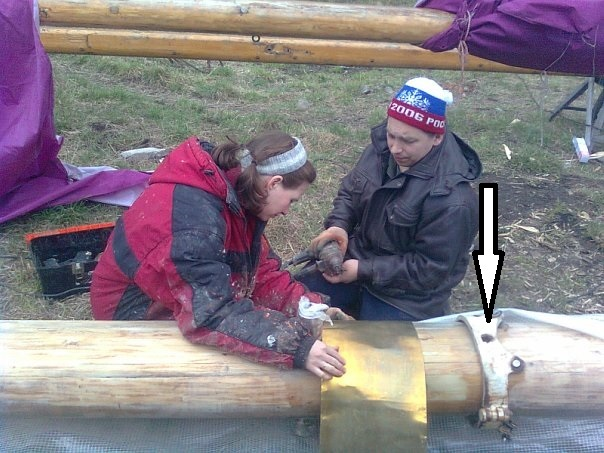

Наши происшествия
Случай №5. Яхта Катти. Авария стоячего такелажа
Каждый, кто учился на судоводителя парусного судна, помнит обязательные действия, которые предпринимаются при обрыве (отдаче) тех или иных тросов стоячего такелажа мачты (или мачт). Если отдался форштаг – сделайте это, а если наветренная ванта – то это.
А вот если отдались сразу все четыре основные ванты гротмачты на кече – что делать? Но обо всем по порядку.
Яхта Катти, бермудский кеч, построенный на Соломбальской верфи, совершала плавание в Балтийском море летом 2005 г. Описываемый эпизод произошел примерно в 20 милях к югу от южного побережья Швеции. Лодка шла под стакселем №2 и зарифленным гротом. Было около часа ночи, когда подвахта (в которой был и я, тогда старший помощник капитана) услышала, как на палубу упали какие-то металлические предметы и раздались громкие крики вахты, что отдалась ванта. Чувствовалось, что лодка пошла на поворот оверштаг, но застряла в левентике, было слышно, как вахта «майнает» грот. Было включено освещение палубы, которая оказалась завалена тросами стоячего такелажа.
Быстро выяснилось, что отдалась не одна, а все четыре (!) основные ванты гротмачты. Мачта устояла. Стаксель был также убран, заведен двигатель. Надо сказать, что гротмачта на «Катти» всегда внушала уважение своей толщиной и немалым весом (материал – клееная сосна). Забегая вперед, скажу, что в последующие несколько часов мы не раз благословили ее несомненно избыточную прочность.
Судоводителями было принято решение – залезть на мачту до первых краспиц, чтобы завести временные ванты из синтетического троса. Это удалось, но трос, несмотря на набивку, сильно тянулся на кренах.
Погода ухудшалась. К утру ветер усилился и порывы достигали 7-8 баллов, шла крупная волна. Наиболее выгодным укрытием, учитывая направление ветра, был остров Борнхольм. Но до него было миль 30. Лодка шла под двигателем почти лагом к волне, и когда сваливалась с нее, мачта без поддержки основных вант гнулась дугой. Зрелище было впечатляющее. Перцу добавляло еще два обстоятельства. Во-первых, старенький дизель Вольво-Пента на такой болтанке очень быстро ел масло и жутко дымил. Масло приходилось подливать каждый час. Нормальное масло кончилось, слава Богу нашлась канистра с отработанным маслом, и оно пошло в ход. Во-вторых, требовалось пересечь очень интенсивный судовой ход и уворачиваться от пароходов, которым мы обязаны были уступать дорогу.
Часов через семь Катти вошла в тесную марину городка Олинге (Борнхольм). Осмотр мачты и такелажа показал следующее. Крепление основных вант на мачте было устроено просто. Все оковки висели на одном толстом стальном пальце с резьбой. Гаек не было найдено, они, скорее всего, покоятся на дне Балтики. Судя по всему, отдалась контргайка, ну а дальше был только вопрос времени. В условиях переменных нагрузок от верхних оковок вант отдалась и вторая гайка, палец выпал – ванты упали на палубу. Осмотр шпора и степса показал, что толстенный 30- миллиметровый стальной палец, который соединял шпор и степс вышел из одной из двух щек степса, но заклинился между ними тяжестью мачты. Видимо боковые нагрузки в болтанку срезали контровку пальца. Экипажу Катти повезло. Если бы шпор тяжелого грота выскочил из степса, мачта могла продавить и палубу, и подводный борт изнутри.
Лодка простояла в Олинге пару дней, экипаж произвел ремонт. Поход был продолжен. По окончании навигации конструкция узла крепления основных вант на мачте была изменена. Каждая ванта получила свою точку крепления на мощной, специально изготовленной оковке.

Эта конструкция зарекомендовала себя хорошо и прослужила верой и правдой до самого конца нашей эксплуатации яхты Катти, выдержала 9 бальный шторм в Балтике. Больше такелаж яхту Катти не подводил. Ах нет, было дело, лопнул талреп на штаге у Гогланда на бейдевинде баллов в пять. Но, во-первых, это уже другая история. А во-вторых, мачта устояла как влитая на своем дополнительном штаге, предусмотрительно заведенным именно на такой случай.